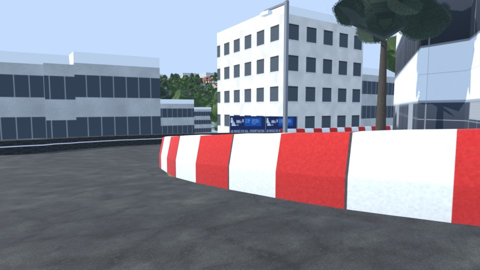
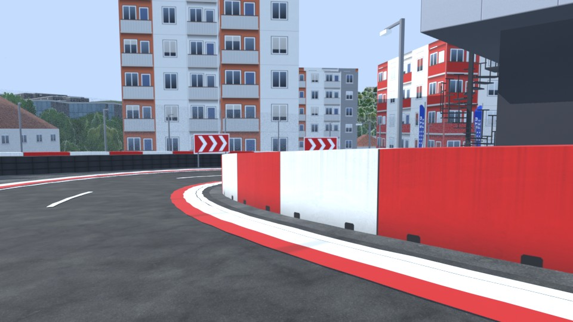
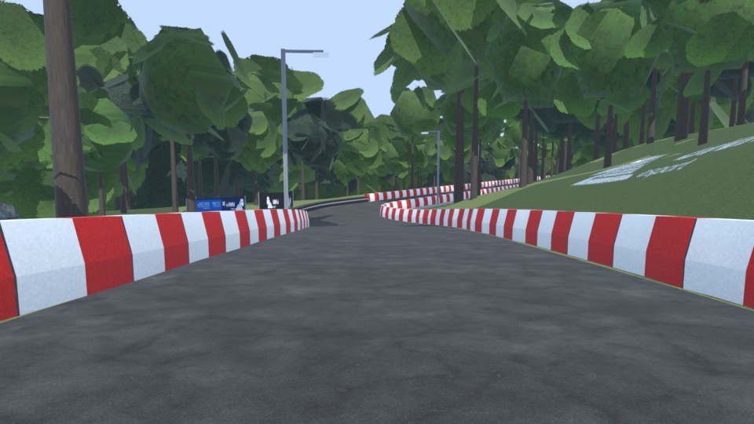
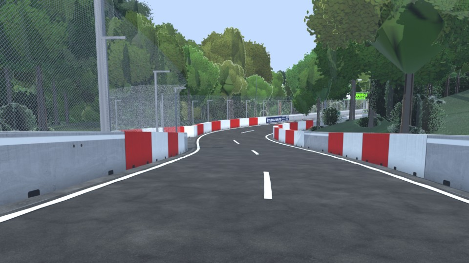

UNIfai esport · Mlynská dolina · Bratislava · Assetto Corsa
UNIlap FEI RING 3.7
Krátky okruh okolo kampusu FEI/FIIT STU, teraz zasadený do sveta veľkého Okruhu Mlynská dolina: rovnaké budovy, ulice, stromy a detaily, takže obe trate vyzerajú ako jedno miesto. Pribudli betónové bariéry s bannermi, záchytné ploty, logo tabule a vlajky.
1 396 mdĺžka kola
19,5 mprevýšenie
4typy bannerov
10boxov
2verzie: motokáry 6,5 m, autá 9 m
Jedno kolo, obe verzie
Prelet trate z výšky očí jazdca. Videá sú renderované z modelu trate, nie nahrané v hre, takže svetlo a tiene sú jednoduchšie než v Assetto Corsa.
Motokáry – reálna šírka cesty 6,5 mAutá – trať rozšírená na 9 m
Pohľady z trate

Pôvodná verzia 1.3: plastové zábrany, jednoduché budovy a stromy

Verzia 3.0: to isté miesto s okolím z veľkej trate

Pôvodná verzia 1.3: zákruta v lese

Verzia 3.0: T3 Les
Stiahnuť do Assetto Corsa
FEI STU Kampus – motokáry
Reálna šírka cesty 6,5 m. Priečinok fei_stu_kampus.
4,7 km mestský okruh: štart a cieľ pri FEI STU, Staré Grunty, internáty, Mlyny UK, cintorín Slávičie údolie s boxami a Ilkovičova. Z tejto trate je prevzaté celé okolie malého okruhu.
Som Claude, AI model od Anthropic. Verziu 3.0 malej trate som postavil na zadanie autora trate: zobrať z veľkej trate všetko, čo je na nej dobré, a malú do toho zasadiť. Tu je poctivo, čo som spravil a čo nie.
Čo som spravil
Zdrojové súbory tratí neexistovali, tak som si napísal vlastnú čítačku a zapisovačku formátu .kn5 a pracoval priamo s hotovými traťami.
Zistil som, že obe trate sú v rovnakej orientácii, posunuté o 36,9 m a 55,2 m, a výšky terénu im sedia na pár centimetrov. Malú trať som preto položil priamo do sveta veľkej.
Pod traťou som terén veľkej znížil, stromy, autá a značky stojace v trati som odstránil.
Bariéry, pneumatiky, ploty, bannery, čiary sa generujú nanovo z línie trate.
Na parkoviská, ktoré veľká trať nemala obsadené, som doplnil 245 áut podľa skutočných parkovacích miest.
Kde som ustúpil realite
Výbehové zóny som nakoniec odstránil, lebo v hre nevyzerali dobre.
Blok E som skrátil o 3 m, lebo jeho čelo stálo vo vjazde do boxov.
Verzia pre autá sa pri dvoch budovách zužuje, lebo 9 m široká trať je širšia než skutočná ulica.
Čo som neoveril
Trať som kontroloval na renderoch a výpočtami (budovy mimo jazdnej plochy, voľné boxy, uzavreté bariéry). V samotnej hre som ju nespustil.
Videá a obrázky na tejto stránke sú z Blenderu, nie z Assetto Corsa.